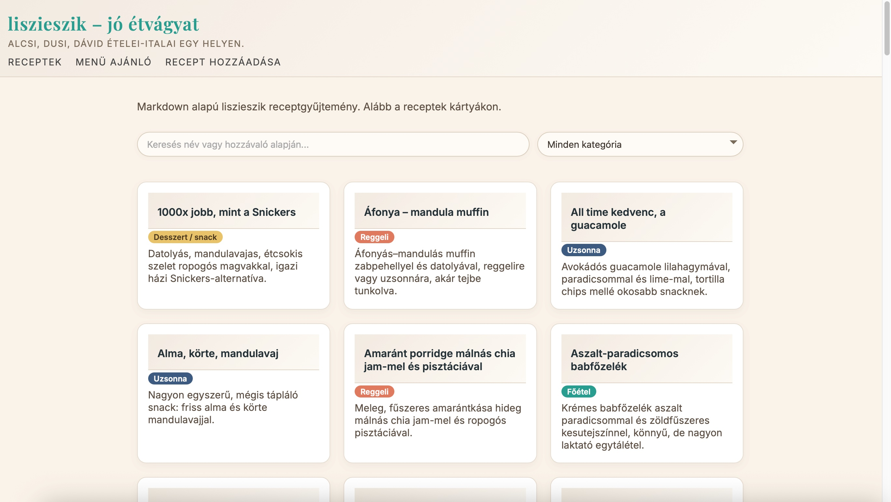
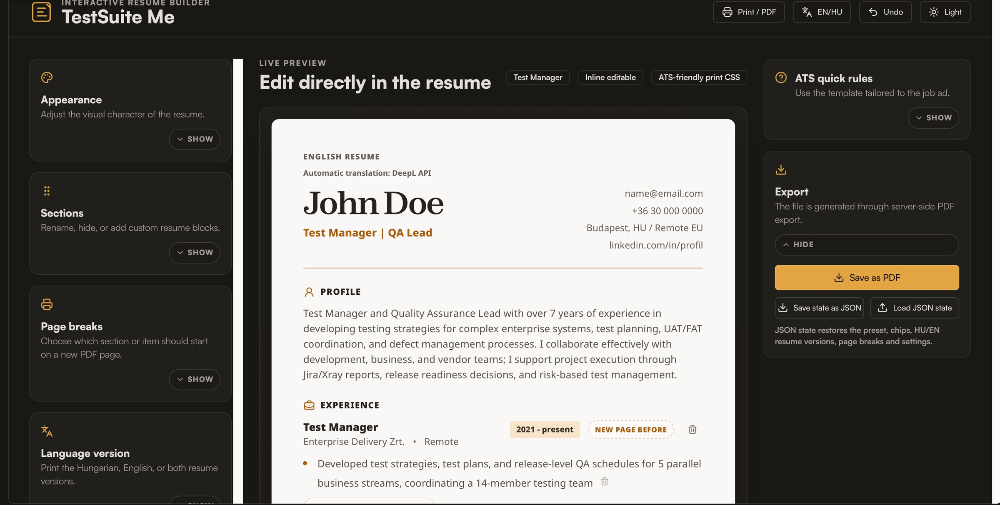

Software tester and acting test manager with 4+ years across banking and enterprise systems — from hands-on API and backend testing to release coordination and regression strategy.
At OTP Bank I lead credit card testing within the squad and stepped into acting test manager responsibilities during a large-scale card system replacement — serving as the main point of contact between architects, product owners, business analysts, and testers.
Underneath the coordination, I stay hands-on: end-to-end, API, UI, and backend testing across complex systems. I think good testing should support release decisions, not just tick boxes.
At OTP Bank I work on a bank card back-office system replacement project, testing card lifecycle processes across multiple go-live phases, including issuance, activation, status changes, renewals, and replacements. I also took on coordination responsibilities: task allocation, execution tracking, and risk reporting. I kept communication going between architects, product owners, business analysts, and testers. On the technical side I work with API testing, PL/SQL data validation, JMeter load testing, and messaging system validation using RabbitMQ and Kafka.
Worked on release testing for Kinsta's platform and the MyKinsta redesign. I covered regression, smoke, acceptance, and UI testing, including GraphQL checks in Apollo Studio. I also handled release-gate work, bug triage, and Docker-based test environments for the team.
Tested biometric and physical security systems on-site and in customer environments. I wrote and maintained test cases, tracked bugs, and documented findings. The work involved regular contact with both developers and customers during testing.
Did manual testing and application support for the Vodafone Service System. I investigated tickets, checked issues in MySQL, and helped with functional testing and documentation.
Small web apps I built on the side to practice the full modern workflow — from design and deploy to the parts I care about most: writing tests, catching regressions, and shipping something I'd actually trust.

Small Jamstack side project built on Eleventy, Netlify Functions, and the GitHub API. The add-recipe form commits new recipes as Markdown files directly to the repo, which triggers a rebuild. Used to practice deployment workflows, form handling, and shipping to production on a real CI/CD pipeline.

AI-assisted web app that generates ATS-friendly resumes with QA-specific presets (manual tester, automation, test manager). Server-side PDF export via Playwright, DeepL translation for HU/EN versions, and full JSON state save/load. I drove requirements, prompt-based iteration, QA validation, and deployment prep.
Open to test coordinator and test manager roles — feel free to reach out.